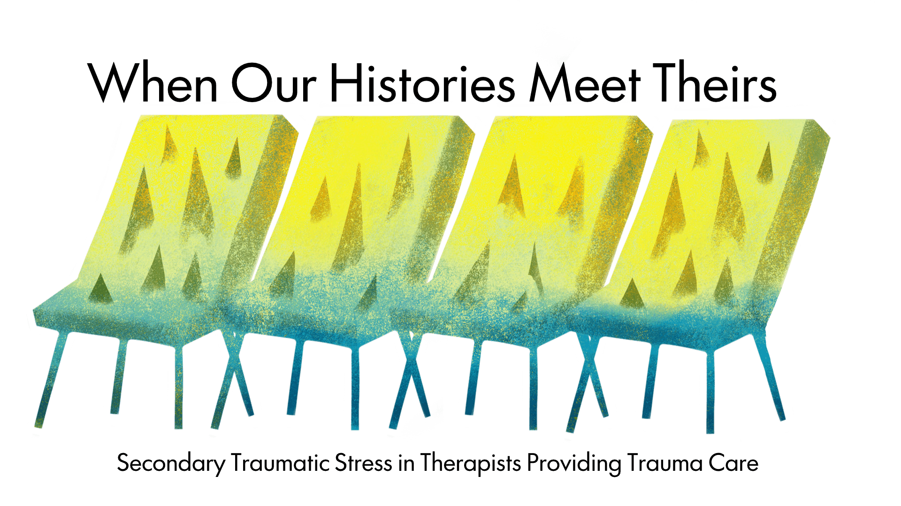
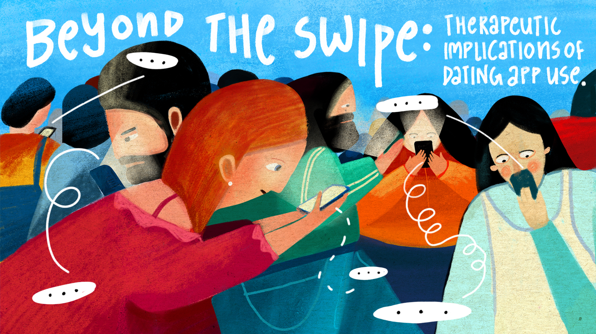
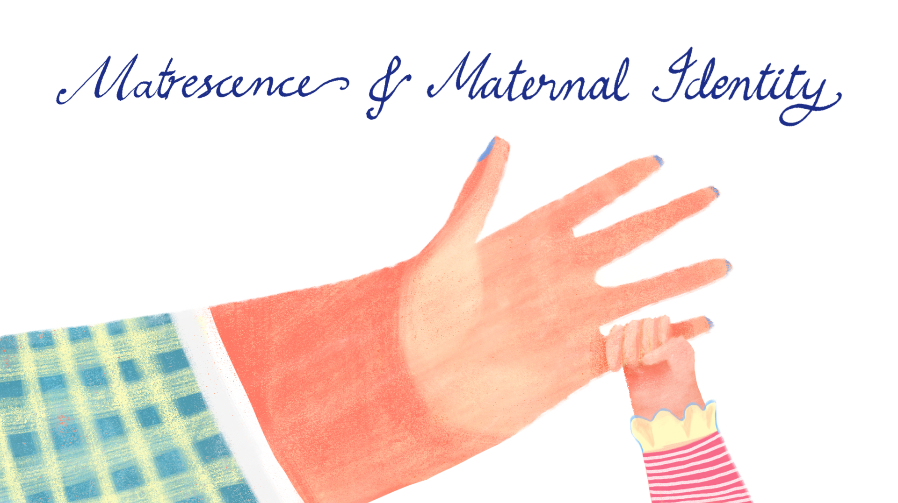

Kaha et al.
Research papers can be a lot, so we pick one and do the hard part for you. We get into the weeds, pull apart the findings, question the conclusions, and figure out what’s actually worth taking away. (You’re welcome!)

Issue 1 · February 2026 When a therapist’s own history meets the room: what the research says about secondary traumatic stress in trauma care.
Issue 2 · February 2026 Swiping, matching, spiralling. What dating apps are doing to our wellbeing, and how it turns up in therapy. Issue 3 · March 2026
Burnout is not gender neutral. How the roles we are handed shape the way we run out of steam.
Issue 3 · March 2026
Burnout is not gender neutral. How the roles we are handed shape the way we run out of steam.
 Issue 4 · April 2026
Cultural humility is a practice, not a box to tick. What it actually asks of therapists and supervisors.
Issue 4 · April 2026
Cultural humility is a practice, not a box to tick. What it actually asks of therapists and supervisors.

Issue 5 · May 2026 Matrescence: the identity shift nobody warns you about, and what naming it does for new mothers. Issue 6 · June 2026
We are more than the things we have survived. Where queer and trans communities find their resilience.
Issue 6 · June 2026
We are more than the things we have survived. Where queer and trans communities find their resilience.
 Issue 7 · July 2026
Wired differently, working together. The gap between neurodivergent minds and the workplaces they land in.
Issue 7 · July 2026
Wired differently, working together. The gap between neurodivergent minds and the workplaces they land in.
Scroll for more issues →